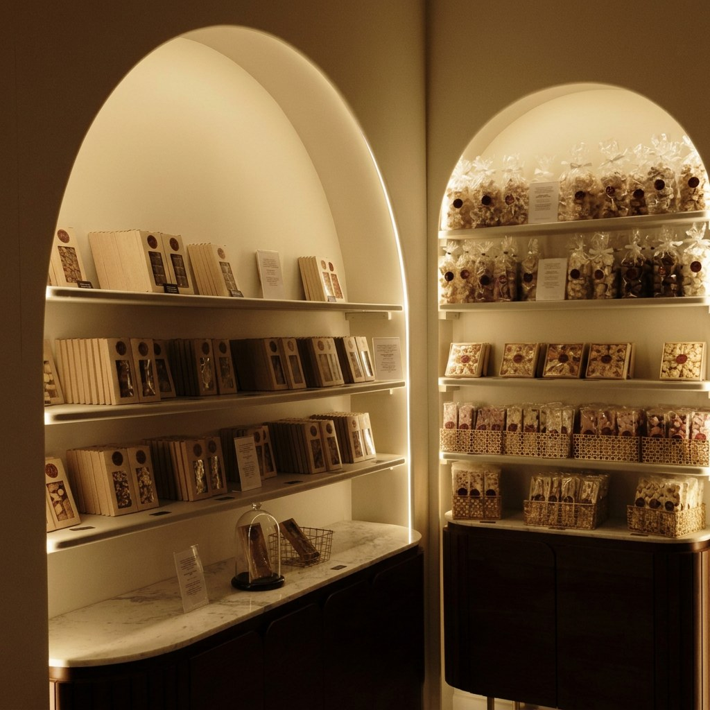

Accueil · L'Histoire de la Maison
L'Histoire de la Maison
Un artisanat de montagne, façonné avec patience
Accueil · L'Histoire de la Maison
Un artisanat de montagne, façonné avec patience
Au cœur de la vieille ville d'Annecy, entre ruelles pavées et canaux, La Chocolaterie des Alpes est née d'une conviction simple : le chocolat mérite d'être traité comme un savoir-faire alpin d'exception, avec la même exigence que l'on porte à l'affinage d'un fromage de montagne ou à la distillation d'une plante d'altitude. Chaque création prend le temps qu'il faut — jamais moins.
Notre philosophie
Noisettes des Bauges, plantes de montagne, crème d'alpage : nos recettes puisent dans les richesses des sommets qui entourent Annecy.
Chaque geste s'apprend, se répète et s'affine — comme on transmet un savoir-faire de génération en génération.
Toutes nos pièces sont façonnées à la main, en petites séries, dans notre atelier de la vieille ville.
De la matière première à la création
01
Fèves de cacao rigoureusement choisies, noisettes des Bauges et plantes de montagne récoltées localement.
02
Fonte, tempérage et conchage lents, pour révéler la texture et les arômes propres à chaque origine.
03
Chaque ganache, praline et tablette est façonnée pièce par pièce, en petites séries, dans notre atelier.
04
Feuille d'or comestible, sel de fleur de montagne ou éclats de noisette : la touche finale de chaque création.

Dans l'atelier
Derrière chaque vitrine, un artisan façonne, trempe et finit chaque pièce à la main. Aucune chaîne, aucune série industrielle : seulement le rythme d'un atelier de la vieille ville, où le temps long reste le meilleur ingrédient.
C'est ce soin porté à chaque détail — la brillance d'un enrobage, la netteté d'un décor à la feuille d'or — qui distingue une création façonnée à la main d'une confiserie produite en série.
On sent la patience derrière chaque création — un artisanat rare, loin de la production de masse.
Une maison qui raconte vraiment les Alpes, jusque dans le choix de ses ingrédients.